El problema
La presión por la atención en redes sociales también es una pelea.
de los adolescentes de 44 países mostró uso problemático de redes sociales en 2022, frente al 7 % de 2018 (OMS, encuesta HBSC).
Visitas a cualquier costo
La búsqueda de likes, seguidores y aprobación lleva a muchos jóvenes a hacer cosas que no harían fuera de cámara.
Autoestima en juego
La comparación constante y las reacciones de otros afectan cómo los jóvenes se ven a sí mismos.
«No todo lo que ves es real. No te dejes llevar por un like.»
El juego
Un videojuego serio: el mensaje no se lee en una pregunta, se vive peleando.
Prende el teléfono
El gallo te presenta: un creador novato con ganas de hacerse viral a cualquier costo.
Escucha a la ninfa
Una amiga te pide no pelear por visitas. Tú decides: hacerle caso o seguir con tu plan.
Crea tu canal
Nombre y foto en NeTube, con una vista previa de tu canal. Luego eliges título, filtro y dificultad.
Pelea en vivo
Calienta contra el árbol del tutorial y enfrenta rivales cada vez más fuertes mientras el chat reacciona.
Enfrenta al Algoritmo
El jefe final es invencible. Despiertas en el hospital y la ninfa te da la lección.
Componente aleatorio
El rival decide cada acción con un dado: golpe, golpe fuerte, patada, bloqueo o burla. El lado de la patada y el chat también son aleatorios.
Habilidad
Lee el aviso del rival y reacciona a tiempo. Cada golpe tiene recarga, la guardia se rompe si abusas de ella y, si golpeas sin parar, el rival contraataca.
Modo furia
Cuando al rival le queda la mitad de vida se enoja: se pone rojo, ataca más rápido, de forma más impredecible y pega más fuerte. Su barra de vida te avisa.
Inclusivo
Filtros para protanopia, deuteranopia y tritanopia, control por cámara o por teclado, tres dificultades y avisos visuales y sonoros.
Motivador
Chat en vivo que reacciona, hitos de audiencia, donaciones, música en cada escena, efectos de K.O. y récords por nivel.
Tus decisiones importan
Al inicio eliges si le haces caso a la ninfa. Hay dos finales distintos y, al terminar, puedes volver al menú y jugar de nuevo.
Personajes
Los protagonistas de la historia.
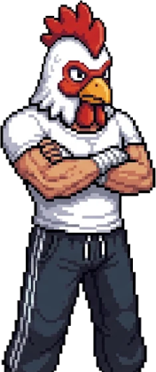
El gallo
Tú: un creador de contenido novato dispuesto a todo por hacerse viral en NeTube.
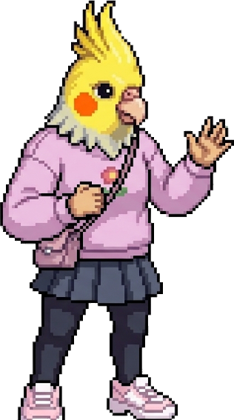
La ninfa
Tu amiga. Te pide que no pongas en riesgo tu salud por unas visitas, y está ahí al final.
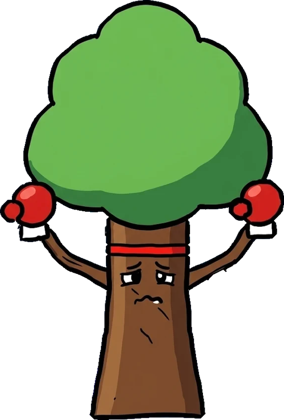
El árbol
Tu compañero de entrenamiento en el tutorial. Con guantes y vincha, aguanta tus primeros golpes.
Dos finales
Tu primera decisión cambia toda la historia.
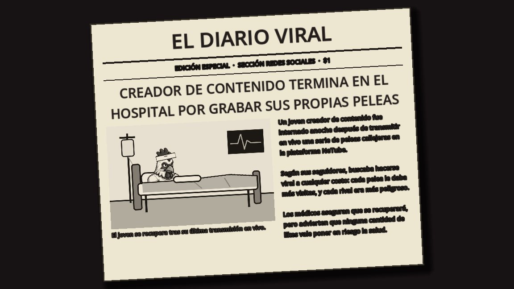
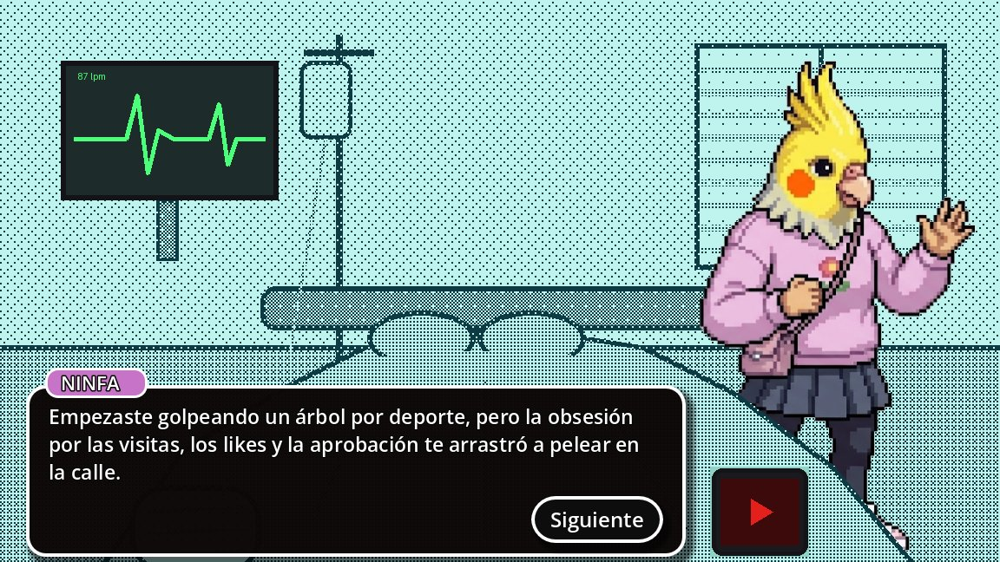
Capturas
Imágenes del juego en ejecución.
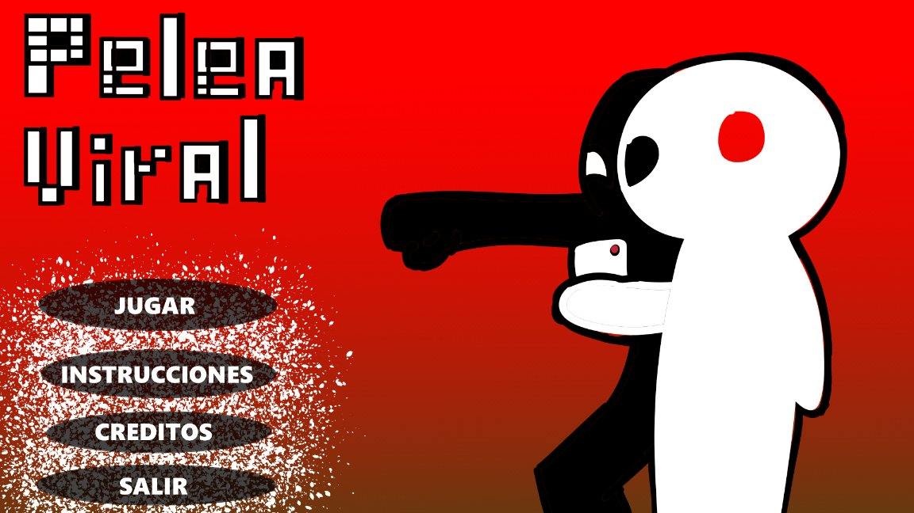
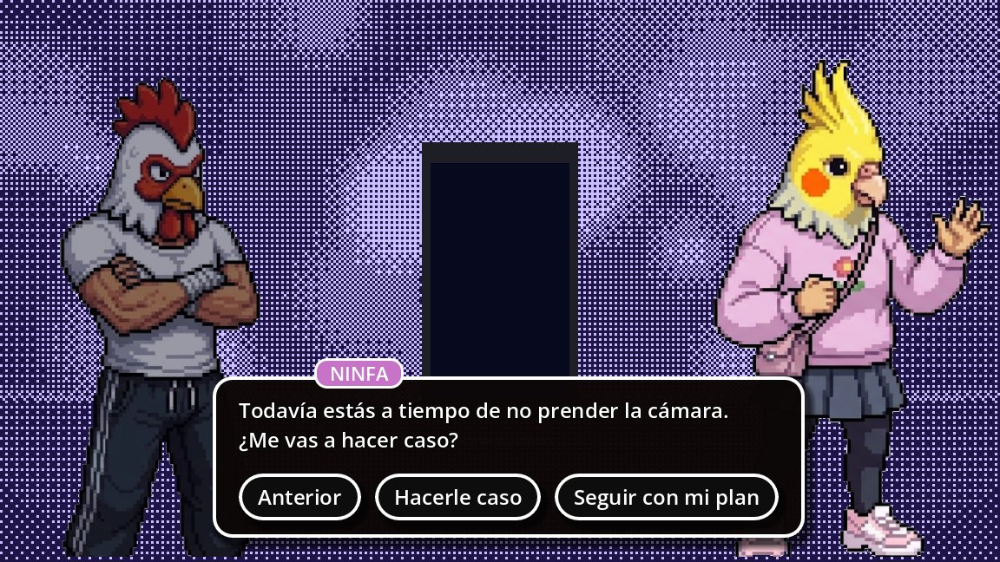
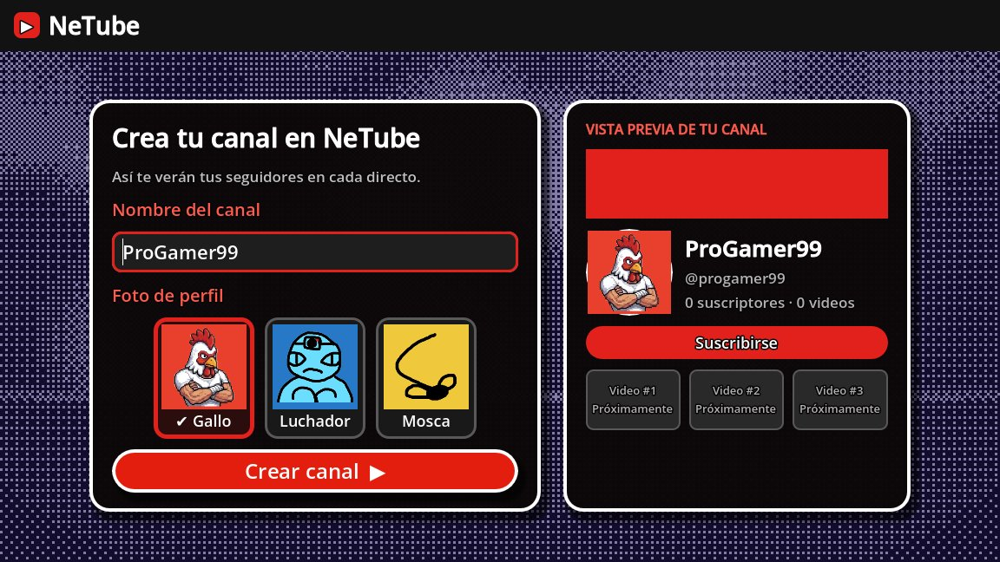
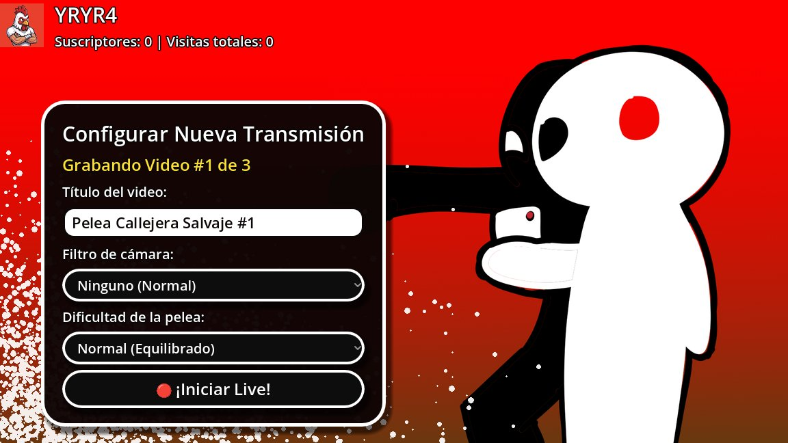
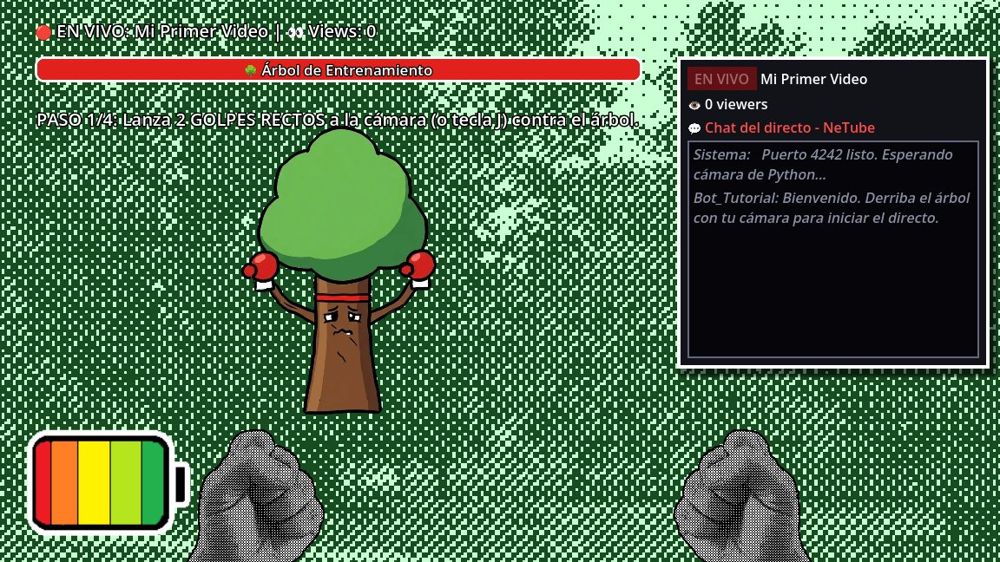
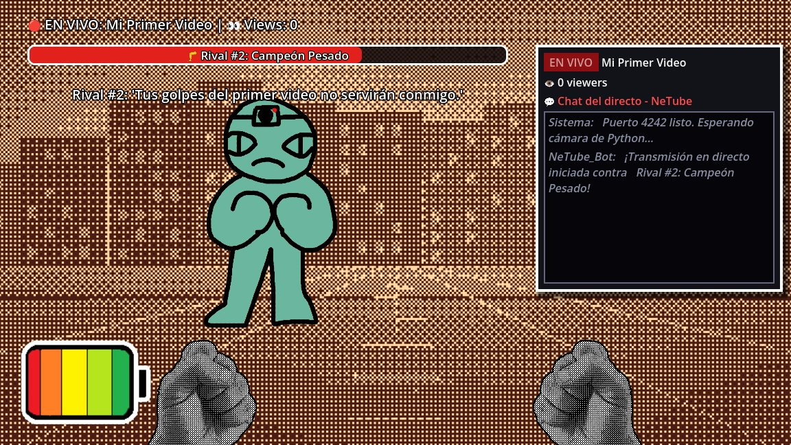
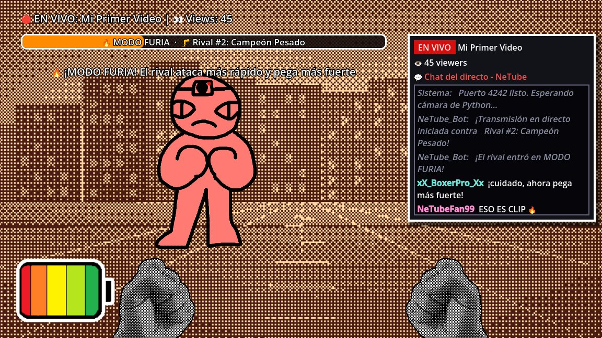
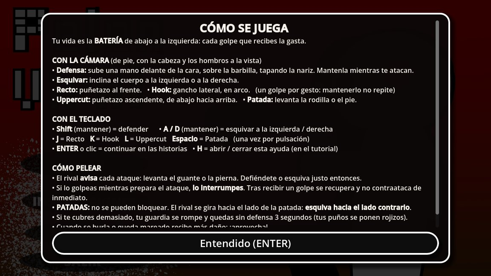
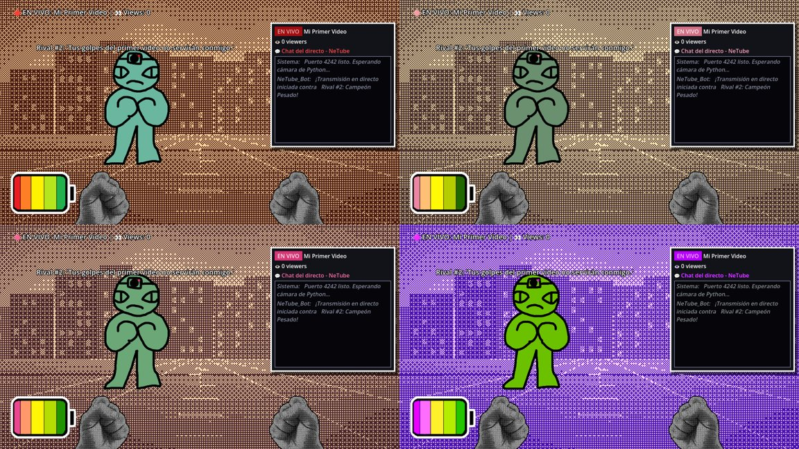
Controles
Juega frente a la cámara con tu cuerpo, o con el teclado.
| Acción | Teclado | Cámara (gesto) |
|---|---|---|
| Defenderse | Shift mantener | Mano delante de la cara, tapando la nariz |
| Esquivar | A / D mantener | Inclinar el cuerpo a un lado |
| Golpe recto | J | Puñetazo al frente |
| Gancho | K | Golpe lateral en arco |
| Uppercut | L | Puñetazo de abajo hacia arriba |
| Patada | Espacio | Levantar la rodilla o el pie |
| Ayuda | H | — |
Cómo está hecho
Programación orientada a objetos y estructuras de datos aplicadas a un juego real.
Tecnología
Godot 4.7 con GDScript. Reconocimiento de gestos en Python con MediaPipe, enviado al juego por UDP.
Patrones de diseño
Cada nivel es una estrategia, cada estado del rival es un objeto, la cámara y el teclado comparten una interfaz y el chat escucha los eventos del combate.
Estructuras de datos propias
Cola para el chat en vivo, lista circular para el turno de los espectadores, lista doble para la historia y archivo JSON para los récords.
Calidad
Más de 30 clases propias, principios SOLID y 108 verificaciones automatizadas superadas (estructuras, combate, escenas y finales). Prueba de usabilidad con usuarios.
Equipo
Programación Orientada a Objetos y Estructura de Datos I · 2026-30 · Ingeniería de Sistemas y Computación, Universidad del Norte.
Dirigido por
Margarita Gamarra · Daniel Romero Martínez · Eduardo Angulo Madrid